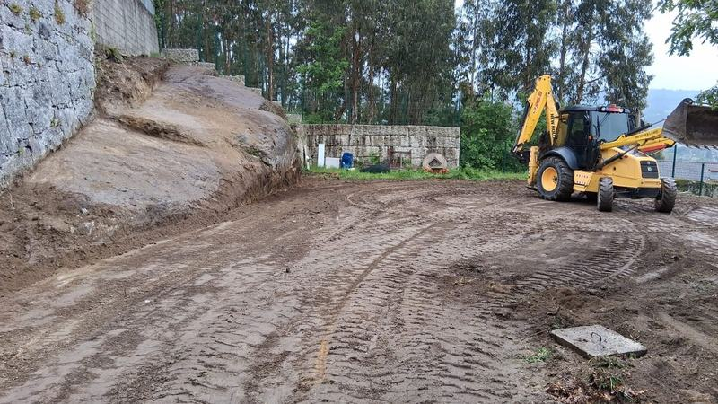

Quanto Custa Terraplanar um Terreno? Guia de Preços 2026
Preços médios de terraplanagem, limpeza de terrenos e muros em pedra em Portugal. Fatores que influenciam o custo e como obter um orçamento justo em Guimarães e Minho.
Ler artigo completo →